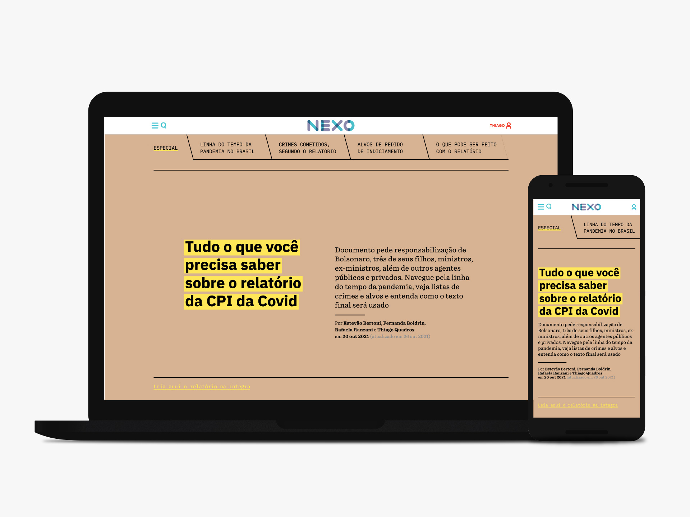
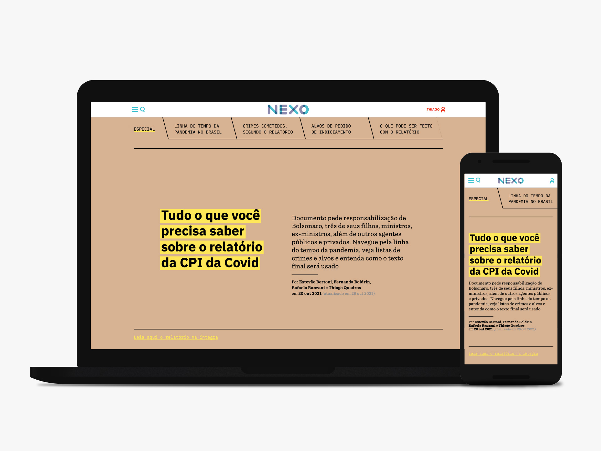

tudo o que você precisa saber sobre o relatório da CPI da covid
nexo jornal — 2021
Como transformar um documento de quase 1300 páginas — de grande interesse público — em um conteúdo inteligível e navegável?
O desafio foi transformar o relatório da CPI da covid numa página especial, destacando os pontos mais importantes: os crimes relatados, os alvos de indiciamento e as possibilidades do relatório. E, além disso, não deixar de lado o contexto político, social e sanitário investigado pela comissão.
A solução foi desmembrar e reorganizar as informações mais importantes. Apresentá-las em um layout com menos recursos visuais como fotos e ilustrações, e mais recursos textuais e interativos.
navegação
Para tornar o conteúdo prontamente acessível, foi desenvolvido um menu sticky com âncoras para cada seção do relatório — o leitor não precisa descer a página toda para chegar até os conteúdos finais.
Além da navegação, o menu também tem a função de localizar o leitor: ele detecta e mostra em que seção do especial se está navegando.
contador
A seção 'Linha do tempo da pandemia no Brasil' é longa e detalhada — passa por todos os dias chaves desde o início da pandemia e seus acontecimentos. Seu foco é ser um material de referência, mais do que uma leitura fluída.
Para dar um contexto a cada um desses dias, foi desenvolvido ao lado do texto um contador, que mostra, naquele dia, quantas mortes por covid já haviam sido registradas no país.
Seu impacto é acompanhar dia por dia o número de vítimas aumentando, mas também ver o número aumentar cada vez mais rápido em um scroll mais rápido.
caixas de conteúdo
Para organizar um conteúdo com diversos tópicos, foi escolhida uma organização por caixas, no lugar do texto corrido tradicional.
Cada seção tem um conjunto de botões, que podem ser abertos e revelam uma caixa com o conteúdo. Para cada seção, a caixa precisa de um desenho diferente para acomodar os diferentes tipos de conteúdos.
As caixas também permitem uma visão geral de cada seção — sem abrir os itens, é possível ver a grande quantidade de crimes investigados pela CPI, por exemplo.
Este projeto foi desenvolvido usando a ferramenta Visual Studio Code. Layout e direção por Rafaela Ranzani